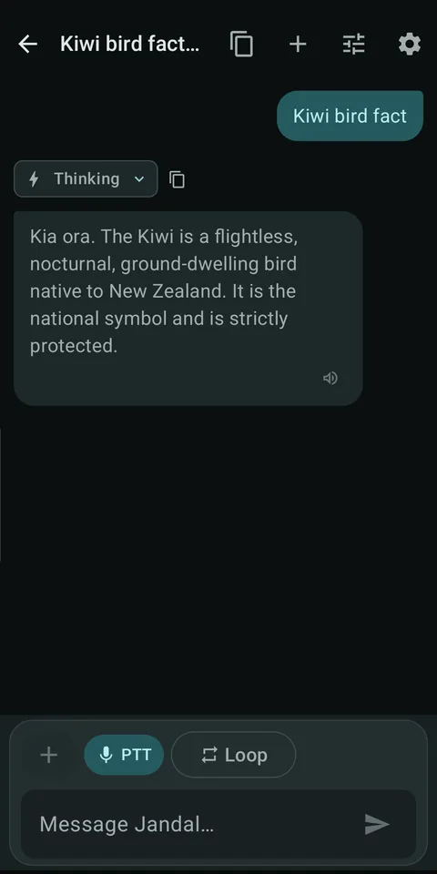
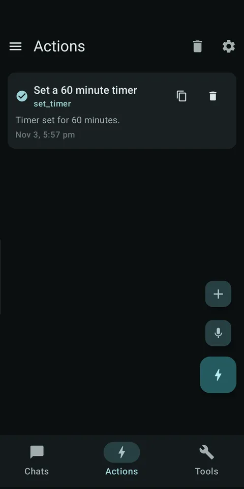
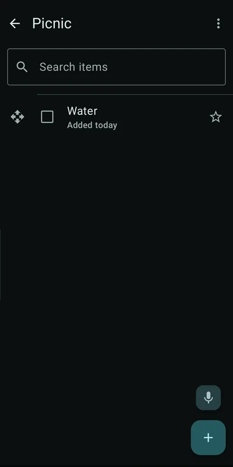
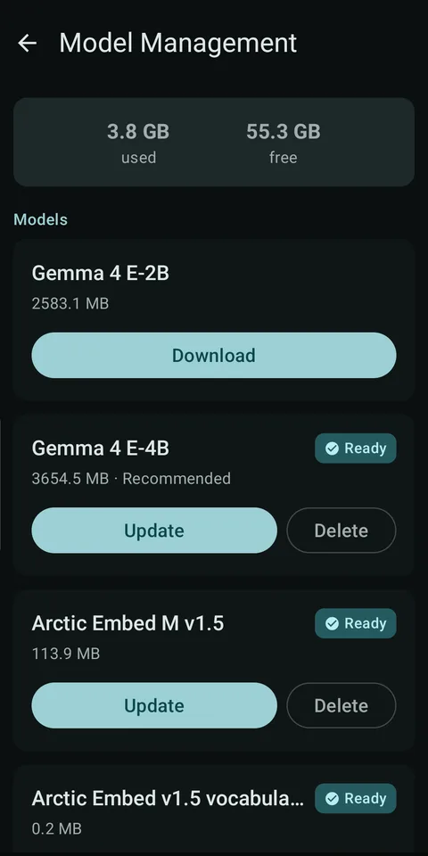
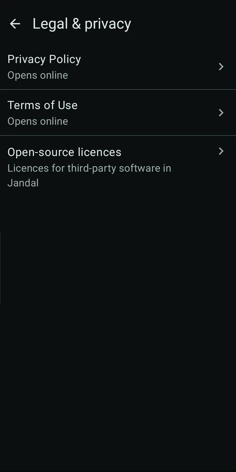

Brain
Gemma 4 runs on your device, so your assistant can think without sending your chat to a Jandal cloud.
A local-first Android assistant
Jandal is an Android assistant with a Kiwi personality. Chat, memory and everyday actions run on your phone.
Your assistant, with its feet on the ground and its smarts close at hand.
A simple idea
Useful AI, built around what you need day to day.
Gemma 4 runs on your device, so your assistant can think without sending your chat to a Jandal cloud.
Keep the useful details close. Your memories are stored locally and you can review them in the app.
Set alarms and timers, manage lists, navigate, and draft messages or email for you to review.
Private by design
Chat and saved memories stay in Jandal on your device; language-model inference runs there too. Online requests are for features that need them, such as model and voice downloads, weather, and optional Nextcloud list sync.
Read the Privacy PolicyA look inside
Real app screens with synthetic demo data.





Getting started
Jandal’s on-device Gemma 4 E-2B model needs a modern Android phone with enough memory and about 3.5 GB of free storage for the first run. Flagship phones can choose E-4B; allow about 4.5 GB. Older or low-memory phones may run slowly or may not run the AI model.